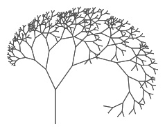

In this lab, you will develop recursive methods that return values.
On this page, you will explore a method for counting the segments in a fractal tree, and re-build it recursively.

In the last few days, you built recursive trees. Each tree is made up of line segments.
Open your tree sketch. How many line segments are in a tree of each level? Complete this table. You can count by eye or add a counter to your sketch.
| level | segment count |
|---|---|
| 1 | 1 |
| 2 | 3 |
| 3 | |
| 4 | |
| 5 | |
| 6 |
👥 Talk with your partner How does the number of segments in one level compare to the number of segments in the previous level?
Write a method whose input is a tree level and whose output is the number of segments in a tree of that level. It should return 127 for level 7.
Morgan and Jasmine discuss the code they created.
for loop to build the power of 2, then subtracted 1 at the end:
int segmentsInTree(int n) {
int answer = 1;
for (int i = 1; i < n; i++) {
answer = answer * 2;
}
return answer - 1;
}return statement sends the final value. I put the last math operation there.
tree.
tree. We used recursion. We drew a segment, turned, called tree to draw a smaller tree, turned again, and then called tree again to draw another, smaller tree.
segmentsInTree recursively. But we can ignore all the drawing and turning parts, right? Let me give this a shot.
You've built and worked with recursive void methods. Recursion can also be used in methods that return values.
return statement executes, the method ends immediately. No further code runs after a return.
If you haven't yet, write a recursive method that returns the number of segments in a tree of level n. Here's Jasmine's code:
int segmentsInTree(int n) {
if (n == 1) {
return 1;
} else {
return 1 + 2 * segmentsInTree(n - 1);
}
}👥 Talk with your partner What is the base case condition? What does the program do in that case? Why is the base case necessary?
The tree method had two recursive calls, but this code has only one. Why?